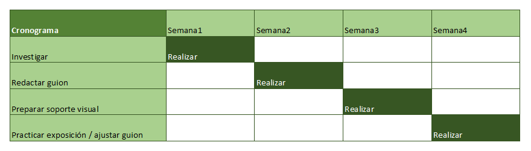
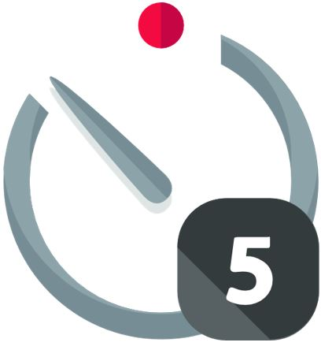

Empezamos recordando la sesión anterior. Los grupos, temas, objetivos y recursos necesarios.
Empezamos recordando la sesión anterior. Los grupos, temas, objetivos y recursos necesarios.
Preguntamos ¿Sabéis qué es un plan de trabajo? ¿Alguna vez habéis tenido que planear algo? ¿Un viaje? ¿Un regalo conjunto? ¿una fiesta sorpresa?
Proponemos incorporar como 'Want to know' a nuestro tablero K-W-L.
Estudiamos ejemplo:
Plan de Trabajo: Preparación de una Exposición sobre el Ciclo del Agua
Introducción al Concepto de Plan de Trabajo: Explica que el plan de trabajo es una forma de organizar las tareas de forma ordenada para completar un proyecto o trabajo.
1. Establecer Objetivos
Debemos tener claro qué queremos lograr. En este caso, el objetivo es preparar y exponer un tema sobre el ciclo del agua.
Objetivo: "Realizar una exposición oral sobre el ciclo del agua."
2. Divide y vencerás. Tareas
Dividimos el trabajo en tareas más pequeñas, más fáciles de manejar.
Tareas para la exposición sobre el ciclo del agua:
Investigación: Leer sobre el ciclo del agua en el libro de texto o buscar información en fuentes fiables.
Hacer un esquema de las etapas del ciclo del agua.
Redacción del guion: Escribir un guion sencillo con las ideas principales sobre cada etapa del ciclo del agua.
Crear el soporte visual: Hacer un dibujo que explique visualmente el ciclo del agua.
Preparar la exposición: Leer el guion y practicar la exposición varias veces.
3. Establecer Plazos Realistas
Investigación: 1 día (buscar información y hacer un esquema).
Redacción del guion: 1 día (escribir el guion de la exposición).
Crear el soporte visual: 1 día (dibujar el ciclo del agua o crear la cartulina).
Preparar la exposición: 2 días (leer y practicar varias veces).
4. Priorizar las Tareas
Es importante enseñarles a priorizar las tareas para evitar dejar las más importantes para el último momento.
Ejemplo de prioridad:
Primero, hacer la investigación sobre el ciclo del agua, porque sin esta base no se puede avanzar en las demás tareas.
Después, redactar el guion y preparar el soporte visual.
Finalmente, practicar la exposición y ajustar el guion si es necesario.
5. Hacer un Cronograma o Tabla
Ejemplo de tabla:

6. Revisión y Ajustes
Revisar el plan de trabajo cada cierto tiempo y ajustar lo que sea necesario.
Ejemplo de revisión:
Semanalmente:
"¿He hecho toda la investigación que tenía que hacer? ¿Necesito más tiempo para practicar la exposición?"
Si algo no se ha cumplido, reajustar el tiempo para no dejar todo para el final.
 Por grupo, se elabora el plan de trabajo. Como docentes acompañaremos el proceso en todo momento. Dando feedbacks a los grupos, recordando objetivos, poniendo ejemplos...
Por grupo, se elabora el plan de trabajo. Como docentes acompañaremos el proceso en todo momento. Dando feedbacks a los grupos, recordando objetivos, poniendo ejemplos...
 Repaso de resultados
Icons by freepik